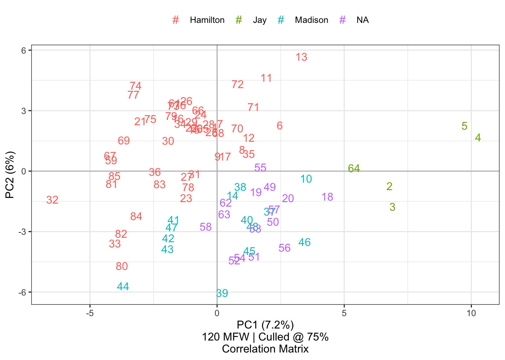
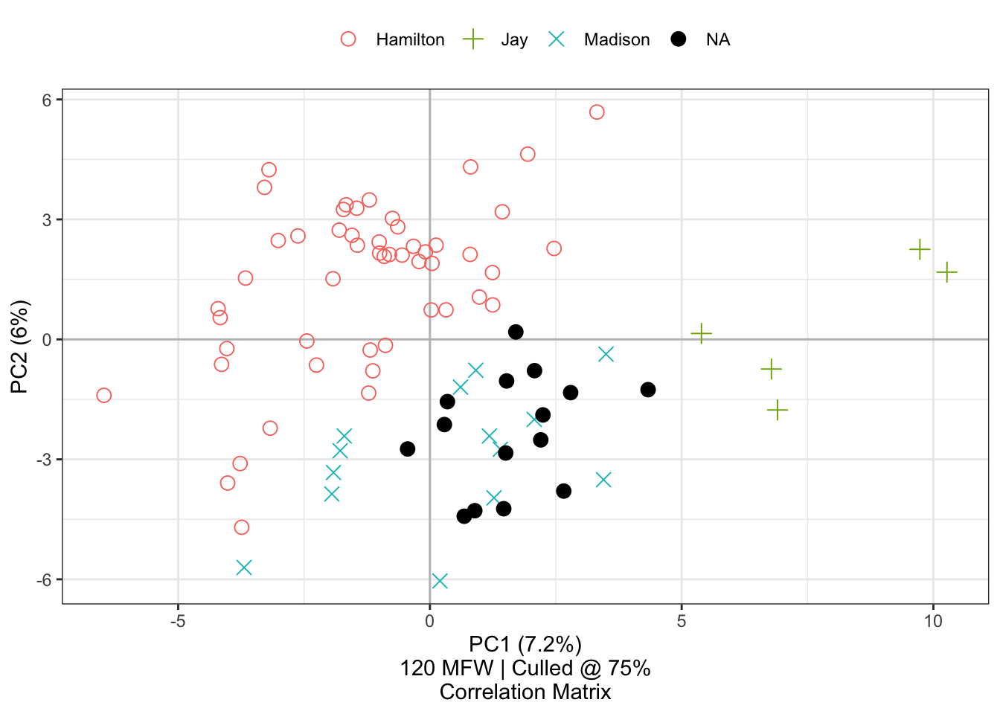
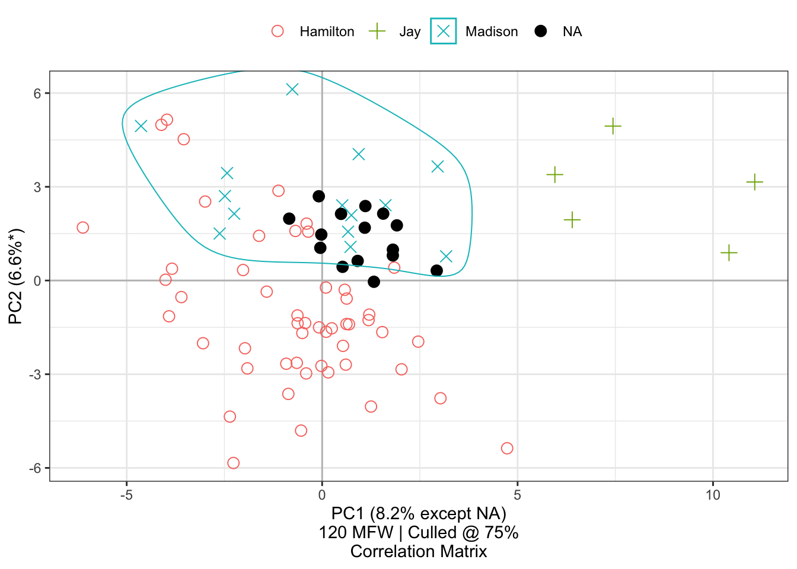
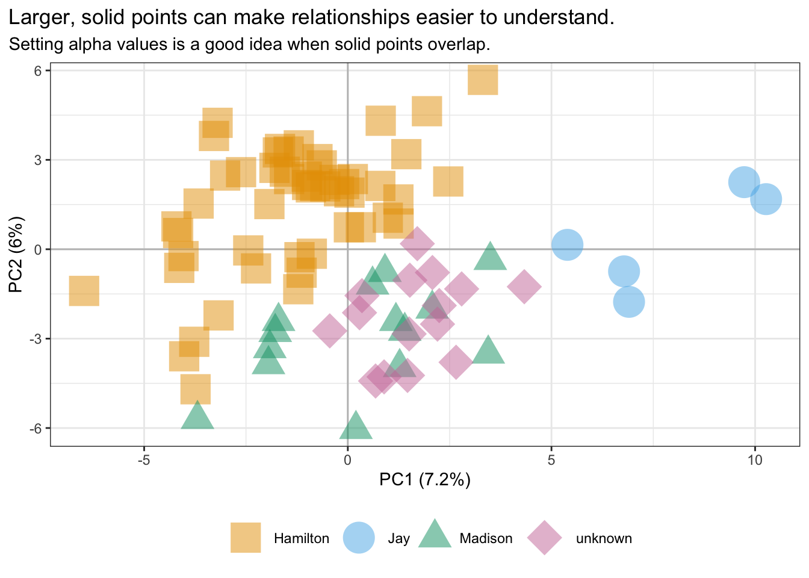
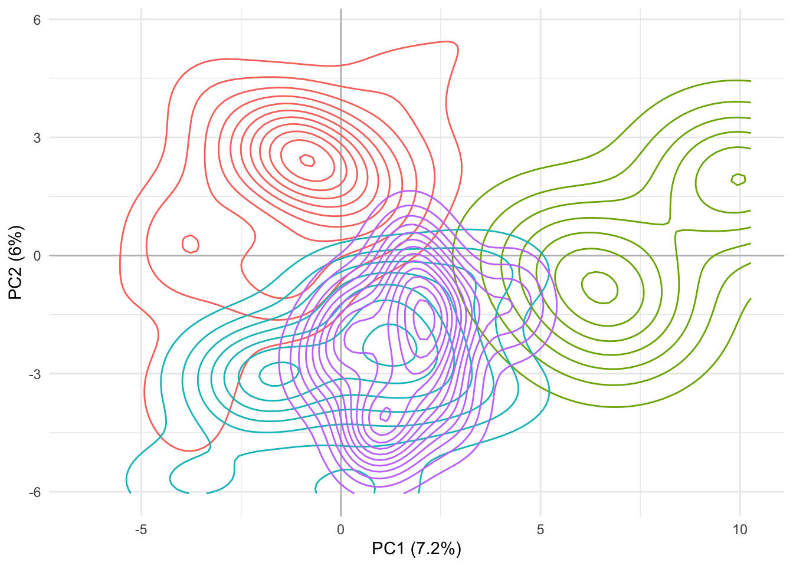
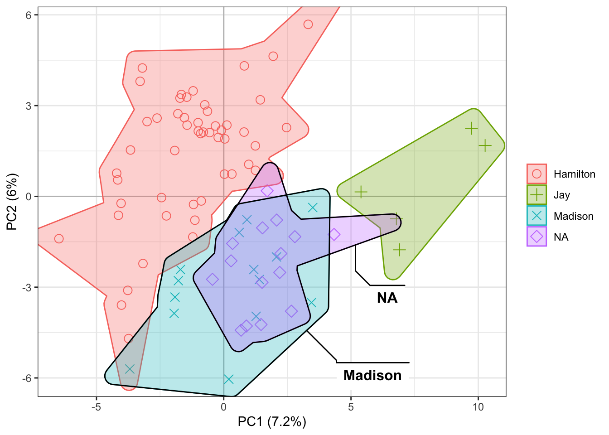

Stylo2gg: Visualizing reproducible stylometric analysis
Overview
In text analysis, stylometry is the measuring of written style. By comparing the use of certain features—most frequent words, bigrams, parts of speech, or some other selection—a stylometrician might propose authorship of unsigned works, understand differences among the styles of known authors, or even suggest the chronological placement of an undated work. From court cases to literary studies, the technique has wide uses.
In R, one of the most common packages for stylometry is Stylo, authored by Maciej Eder, Jan Rybicki, Mike Kestemont, and Steffen Pielstroem. Stylo provides beginners a GUI overlay, making it more approachable to users who might be uncomfortable writing code. For others, a parameter-based interface makes it possible to use Stylo in RMarkdown and Quarto documents, embedding analysis within a document to keep work reproducible and organized. With such a range of accessibility and accuracy proven by its use in many peer-reviewed publications, Stylo is a boon for researchers.
Still, Stylo has some limitations:
It can be hard to keep track of analyses when trying out many things in a session.
While exploring a corpus, users are faced with the burden of rerunning an analysis for each small change of visualization.
The graphics may not match other figures in a project that uses Ggplot2.
The Stylo2gg package, now at version 1.0.2, has been shared to address these concerns. See github.com/jmclawson/stylo2gg for the code, and install the package using remotes::install_github("jmclawson/stylo2gg").1
Reproducible analyses
Christof Schöch documented some of Stylo’s shortcomings for documenting reproducible analyses on the package’s issues tracker.2 Among them are that the parameters get lost when working from the terminal and that files get overwritten each time the stylo() function is called. To address these concerns, Stylo2gg adds two functions.
Logging an analysis
When creating an analysis from the function stylo(), the function stylo_log() will document necessary steps. Here’s how it’s used:
This last step creates a directory called “stylo_log” within the working directory. Inside it are five files: four time-stamped copies of configuration files provided by Stylo, and one file logging every time stylo_log() was called today in this project, along with any parameters needed to recreate it.
Replicating an analysis
A second function, stylo_replicate() allows for the recreation of a logged analysis. For instance, the following will reproduce the analysis logged at 12:01 AM on Jan 1, 2023:
my_data2 <- stylo_replicate("2023-01-01 00:01:00",
log_date = "2023-01-01")The only differences between my_data1 and my_data2 are in the objects’ saved call. The object created by stylo() records only the parameters listed above, but the object created with stylo_replicate() makes the default settings explicit.
Lastly, if stylo_replicate() is used without a date_time argument, it will act like stylo(), with the added benefit of automatically calling stylo_log() in the same step:
my_data3 <- stylo_replicate(gui = FALSE,
corpus.dir = "data/federalist/",
display.on.screen = FALSE,
culling.max = 75,
culling.min = 75,
mfw.min = 900,
mfw.max = 900)Here, the objects my_data1 (created by stylo::stylo() before being logged by stylo_log()), my_data2 (replicated by stylo_replicate()), and my_data3 (created and logged via stylo_replicate()) are almost identical. This makes it easier to keep track of the processes used in analysis, providing the “documentation mode” and “replication mode” Schöch calls for.
Principal components
One common method for understanding stylometric relationships among texts is to visualize a principal components analysis in a two-dimensional space. To do this, typically the first principal component is projected on the X-axis, and the second principal component is projected on the Y-axis. In addition to measuring word frequencies among all documents in a corpus, the Stylo package shows a visualization of such an analysis, projecting many documents into a chart showing these kinds of coordinates. As an example, here’s the code and output showing similarities among the eighty-five Federalist Papers, originally published pseudonymously in 1788:
library(stylo)
federalist_mfw <-
stylo(gui = FALSE,
corpus.dir = "data/federalist/",
analysis.type = "PCR",
pca.visual.flavour = "symbols",
analyzed.features = "w",
ngram.size = 1,
display.on.screen = TRUE,
sampling = "no.sampling",
culling.max = 75,
culling.min = 75,
mfw.min = 900,
mfw.max = 900)As the figure suggests, most of these documents were eventually known to be written by Alexander Hamilton, John Jay, and James Madison, shown categorized here by their last names. Although most had known authorship, some were disputed or had joint authorship, shown here by the “NA” category. From their placement along the X- and Y-axes, the disputed papers seem closest in style to those by James Madison. The analysis here uses some of the same measures Frederick Mosteller and David Wallace famously used in their 1963 study, and it arrives at similar conclusions, but the ease and usefulness of tools like Stylo means that preparing this quick visualization demands far less time and sweat.
In saving this output to a named object federalist_mfw, Stylo makes it possible to access the frequency tables to study them in other ways. By taking advantage of this object, the Stylo2gg package makes it very easy to try out different visualizations. Without any changed parameters, the stylo2gg() function will import defaults from the call used to run stylo():
ggplot2 defaults for shapes and colors, the visualization created by stylo2gg nevertheless shows the same patterns of style, presenting a figure drawn from the same principal components. Here, the disputed papers are marked by purple diamonds, and they seem closest in style to the parts known to be by Madison, marked by blue Xs.In the simplest conversion of a stylo object, stylo2gg() tries as closely as is reasonable to recreate the analytic and aesthetic decisions that went into the creation of that object, creating a chart comparing first and second principal components with axes marked by each’s distributed percentage of variation; the caption shows the feature count, feature type, culling percentage, and matrix type; and the legend is shown at the top of the graph. Stylo2gg even honors the choice from the original stylo() call to show principal components derived from a correlation matrix, although other options are available.
Labeling points
From here, it’s easy to change options to clarify an analysis without having to call stylo() again. Files prepared for Stylo typically follow a specific naming convention: in the case of this corpus, Federalist No. 10 is prepared in a text file called Madison_10.txt, indicating metadata offset by underscores, with the author name coming first and the title or textual marker coming next. Stylo already uses the first part of this metadata to apply color to different authors or class groupings of texts. Stylo2gg follows suit, but it can also choose among these aspects to apply a label. For this chart, it might make sense to replace symbols with the number of each paper it represents:
federalist_mfw |>
stylo2gg(shapes = FALSE,
labeling = 2)
shapes=FALSE turns off the symbols that would otherwise also appear; simultaneously, the option labeling=2 selects the second metadata element from corpus filenames—in this case the number of the specific paper—as a label for the visualization. When a chosen label consists of nothing but numbers, as it does here, the legend key changes to a number sign. If a label includes any other characters, it becomes the letter ‘a’, Ggplot2’s default key for showing color of text.Displaying these labels makes it possible further to study Mosteller and Wallace’s findings on the papers jointly authored by Madison and Hamilton: in this principal components analysis of 120 most frequent words, papers 18, 19, and 20 seem closer in style to Madison than to Hamilton, and Mosteller and Wallace’s work using different techniques seems to show the same finding for two of these three papers, with mixed results for number 20.
If it were preferred instead to label the author names, we could set labeling=1. If we wanted to show everything, replicating Stylo’s option pca.visual.flavour="labels", we can set labeling=0:
federalist_mfw |>
stylo2gg(shapes = FALSE,
labeling = 0)labeling=0 shows entire file names for items in the corpus, excepting the extension. This option also turns off the legend by default, since that information is already indicated.Highlighting groups
In addition to recreating some of the visualizations offered by Stylo, Stylo2gg takes advantage of Ggplot2’s extensibility to offer additional options. If, for instance, we want to emphasize the overlap of style among the disputed papers and those by Madison, it’s easy to show a highlight of the 3rd and 4th categories of texts, corresponding to their ordering on the legend:
highlight option accepts numbers corresponding to categories shown on the legend. Highlights on principal components charts can include 1 or more categories, but highlights for hierarchical clusters can only accept one category. To draw these loops around points on a scatterplot, stylogg relies on the ggalt package.Overlay loadings
With these texts charted, we might want to communicate something about the underlying word frequencies that inform their placement. The top.loadings option allows us to show a number of words—ordered from the most frequent to the least frequent—overlaid with scaled vectors as alternative axes on the principal components chart:
federalist_mfw |>
stylo2gg(shapes = FALSE,
labeling = 2,
highlight = 4,
top.loadings = 10)top.loadings to a number n to overlay loadings for the most frequent words, from 1 to n. This chart shows loadings and scaled vectors for the 10 most frequent words.Alternatively, show loadings by nearest principal components, by the middle point of a given category, by a specific word, or all of the above:
federalist_mfw |>
stylo2gg(shapes = FALSE,
labeling = 2,
select.loadings = list(c(-4, -6),
"Madison",
call("word",
c("the", "a", "an"))))select.loadings option accepts coordinates, category names, and words. Here, c(-4,-6) indicates that the code should find the loading nearest to -4 on the first principal component and -6 on the second principal component; "Madison" indicates that the function should find coordinates at the middle of papers by Madison and then find the loading nearest those coordinates; and three articles “the,” “a,” and “an” indicate, using call("word"), that these specific loadings should be shown.These words and lines are gray by default. As of fall 2022, other colors can be specified, and the letters can be converted to uppercase for legibility:3
federalist_mfw |>
stylo2gg(top.loadings = 6,
loadings.line.color = "blue",
loadings.word.color = "navy",
loadings.upper = TRUE)
loadings.line.color and loadings.word.color to change the coloring of loadings. Optionally toggle loadings.upper to show uppercase letters, or set loadings.spacer to define the character shown in lieu of spaces when measuring bigrams and other n-grams.Narrowing things down
One beauty of using a saved frequency list is that it becomes possible to select a subset from the data to inform an analysis. By counting all words that appear in 75% of the texts for this analysis, Stylo prepares a frequency table of 120 words. Stylo2gg can select a subset of these using the features option, for selecting a specific vector of words, or the num.features option, for automatically selecting a given number of the most frequent words.
One might, for instance, hypothesize that words shorter than four characters are sufficient to differentiate style in these English texts.4 Using the features option, I might test this hypothesis by choosing a smaller subset from the full list of 120 most frequent words:
short_words <-
federalist_mfw$features.actually.used[federalist_mfw$features.actually.used |> nchar() < 4]
federalist_mfw |>
stylo2gg(shapes = TRUE,
features = short_words,
top.loadings = 10)Results here suggest that my hypothesis would have been mostly correct, as it is possible still to see patterns in clusters. But limiting an analysis solely to these shorter words makes it harder to differentiate the styles of Hamilton and Madison. Interestingly, Jay’s style remains distinct in this consideration. Interesting, too, the overlay of the top ten loadings shows that papers with positive values in the second principal component in this chart—above a center line—are strongest in first-person plural features like “us” and “our” and “we.” And perhaps most interesting, just quickly looking at the top ten loadings suggests that Hamilton’s papers may have been less likely to use past-tense constructions like “was” and “had,” preferring infinitive forms marked by “to” and “be.”
If instead of manually selecting features I wanted to choose a subset by number, the num.features option makes it possible to do so.
federalist_mfw |>
stylo2gg(shapes = FALSE,
labeling = federalist_mfw$table.with.all.freqs |>
rownames() |>
str_extract("^[A-Z]") |>
paste0(".",
federalist_mfw$table.with.all.freqs |>
rownames() |>
str_extract("[0-9]+")),
legend = FALSE,
highlight = 2,
num.features = 50)num.features to 50 will limit a chart to the 50 most frequent words. The caption updates to reflect this choice.The code for this last visualization also shows that, in addition to a number corresponding to the metadata from a filename, the labeling option can also accept a vector of the same length as the number of texts. Here, I’ve elected to show the first letter of each author category, a dot, and the text’s corresponding number; additionally, I’ve turned off the legend by setting its option to FALSE.
Emphasizing with contrast
By default, stylo2gg uses symbols that ought to be distinguishable when printing in gray scale. Use the black= option with the number of a given category to further optimize for gray-scale printing or to employ contrast to emphasize a particular group.
federalist_mfw |>
stylo2gg(black = 4)
Withholding texts from a PCA projection
In cases of disputed authorship, it can be desirable to understand relationships among known texts and authors before considering those of unknown provenance. New in version 1.0, Stylo2gg’s withholding parameter allows for certain classes to be left out from defining the base projection of a principal components analysis. These texts are then projected into a space they did not help define:
federalist_mfw |>
stylo2gg(withholding = "NA",
highlight = 3,
black = 4)
withholding makes it possible to ignore certain classes of texts from the underlying projection.Choosing principal components
Stylo2gg follows Stylo’s lead in showing the first two principal components, but it may often be necessary to show more. Introduced earlier in 2023, the pc.x and pc.y parameters make it possible to map other components to the X-axis and Y-axis, simultaneously updating axis labels to indicate components and variance.5
federalist_mfw |>
stylo2gg(pc.x = 3, pc.y = 4)Other options for principal components analysis
In addition to the options shown above, principal components analysis can be directed with a covariance matrix (viz="PCV") or correlation matrix (viz="PCV"), and a given chart can be flipped horizontally (with invert.x=TRUE) or vertically (invert.y=TRUE). Additionally, the caption below the chart can be removed using caption=FALSE. Alternatively, setting viz="pca" will choose a minimal set of changes from which one might choose to build up selected additions: turning on captions (caption=TRUE), moving the legend or calling on other Ggplot2 commands, adding a title (using title="Title Goes Here"), or other matters.
library(ggplot2)
federalist_mfw |>
rename_category("NA", "unknown") |>
stylo2gg(viz = "pca") +
theme(legend.position = "bottom") +
scale_shape_manual(values = 15:18) +
scale_size_manual(values = c(8.5, 9, 7, 10)) +
scale_alpha_manual(values = rep(.5, 4)) +
scale_color_manual(values = c("#E69F00", "#56B4E9", "#009E73", "#CC79A7")) +
labs(title = "Larger, solid points can make relationships easier to understand.",
subtitle = "Setting alpha values is a good idea when solid points overlap.") +
theme(plot.title.position = "plot")
viz="pca" rather than the stylo-flavored viz="PCR" or viz="PCV" prepares a minimal visualization of a principal components analysis derived from a correlation matrix. This might be a good setting to use if further customizing the figure by adding refinements provided by Ggplot2 functions—at which point it will become necessary to load Ggplot2 explicitly. The example here also shows the utility of the Stylo2gg function for adjusting labels, rename_category().Hierarchical clusters
In addition to two-dimensional relationships with principal components, Stylo can also show a dendrogram for cluster analysis, showing texts’ relationships based on their distance to each other. The resulting dendrogram shows texts in branches splitting off from one another at points that correspond to distance. In the orientation shown below, when two texts or groups of texts seem to have greater stylistic similarity, their branches will join nearer to the right side of the chart—nearer to a distance of zero. As the texts show greater dissimilarity, their branches will connect closer to the left side of the chart.
stylo(gui = FALSE,
corpus.dir = "data/federalist/",
custom.graph.title = "Federalist Papers",
analysis.type = "CA",
analyzed.features = "w",
ngram.size = 1,
display.on.screen = TRUE,
sampling = "no.sampling",
culling.max = 75,
culling.min = 75,
mfw.min = 900,
mfw.max = 900)Using the same federalist_mfw object saved earlier, Stylo2gg will create a similar cluster analysis using the option viz="CA":
federalist_mfw |>
stylo2gg(viz = "CA")
The addition of symbols to the chart allows for interpretability when printing, though these can be turned off with shapes=FALSE, as they can when showing PCA. In fact, many of the same options that apply to a visualization of principal components will also apply to cluster analysis:
federalist_mfw |>
stylo2gg(viz = "CA",
labeling = 2,
highlight = 4,
black = 3) +
theme(legend.position = "bottom") +
scale_shape_manual(values = 15:18)Options for distance and linkage
Stylo2gg will adopt Stylo’s settings for measuring distances and finding groups if they are available. If they’re not available, it will default to finding distance using the Burrows delta (distance.measure="delta") and grouping texts using the Ward1 method (linkage="ward.D"). Many other options native to Stylo and to R can be set for these.
Minimal display
When setting viz="CA" or importing directly from a Stylo analysis with the option set analysis.type="CA", Stylo2gg will try to approximate the aesthetics shown by stylo, displaying an axis of distance and an explanatory caption. These options may not be desired since relative distances are already meaningful without the axis. To show a minimal dendrogram, choose the option viz="hc" (for hierarchical clustering)
federalist_mfw |>
stylo2gg(viz = "hc",
shapes = FALSE,
linkage = "ward.D2",
distance = "euclidean") +
expand_limits(y = 0)Highlighting results with boxes
As shown above, setting the highlight option to a category’s number will draw a box around the branches containing this category. Unlike with principal components visualization, only one category can be highlighted at a time on a dendrogram; nevertheless, there are a few more options available to tweak this highlighting.
By default, Stylo2gg will draw a single box, even if texts belonging to a category are distributed unevenly.
federalist_mfw |>
stylo2gg(viz = "hc",
shapes = FALSE,
highlight = 1,
highlight.nudge = 0.4,
linkage = "ward.D2",
distance = "euclidean") +
expand_limits(y = 0)
highlight.nudge option here moves the box’s edge to avoid clipping labels; whether it is needed might depend on local installations.Setting highlight.single=FALSE will instead draw multiple boxes while consolidating any contiguous branches:
federalist_mfw |>
stylo2gg(viz = "hc",
shapes = FALSE,
highlight = 1,
highlight.nudge = 0.4,
highlight.single = FALSE,
linkage = "ward.D2",
distance = "euclidean") +
expand_limits(y = 0)As an alternative to categorical highlighting on a dendrogram, Stylo2gg can draw boxes indicated by each text’s index number from the bottom, with the lowest text being number 1, the second-lowest text number 2, etc:
federalist_mfw |>
stylo2gg(viz = "hc",
shapes = FALSE,
highlight.box = c(6:19, 23:24, 29:63, 84:85),
highlight.nudge = 0.4,
linkage = "ward.D2",
distance = "euclidean",
show.zero = FALSE)
highlight.box option. To aid in the counting, set count.labels=TRUE.Vertical dendrograms
Finally, set horiz=FALSE to display the cluster analysis vertically instead of horizontally:
Ggplot2 features
In addition to the options accommodated within Stylo2gg, visualizations benefit from the conversion to the Ggplot2 system over base graphics. Options like theming, transparency, and symbol shape and size behave as they do with any other Ggplot2 output, potentially matching other visualizations in a report and giving one access to many useful functions for communicating findings.
federalist_mfw |>
stylo2gg() +
xlim(-1, 4.5) +
ylim(NA, 0.5) +
theme_minimal()Additionally, Ggplot2 makes it easy to add layers, imagining new ways of communicating an idea—for example, by using density overlays to indicate how Hamilton’s typical style is distinct from the style of the disputed papers:
stylo2gg(federalist_mfw, "pca", legend = FALSE) +
scale_alpha_manual(values = rep(0, 4)) +
geom_density_2d(aes(color = class),
show.legend = FALSE) +
theme_minimal()
stylo2gg() passes along the variable class used for the categorical grouping.Most usefully, the conversion to Ggplot2 allows visualizations to benefit from a universe of package add-ons like “Ggforce,” which opens up many more options and customizations than could ever be considered in a single package devoted to stylometry:
library(ggforce)
stylo2gg(federalist_mfw, "pca") +
geom_mark_hull(aes(fill = class,
color = class)) +
geom_mark_hull(aes(group = class,
label = class,
filter = class %in% c("Madison","NA")),
con.cap = 0,
show.legend = FALSE)
Many other extensions to Ggplot2 are available.6 Although not all are appropriate for stylometry, and only some will be compatible with Stylo2gg’s data structure, it’s promising to see some like Ggforce working instantly.
Conclusions
Written by a user to improve reproducibility and customization of two types of visualization when using Stylo for research, Stylo2gg extends a beloved package. Over the past year, and especially because of suggestions proposed by others working with stylometry in R, it has added new features and become even more useful.
Presented at
USRSE2023, Chicago, IL, October 16–18, 2023.
References
Footnotes
This notebook was created using R version 4.2.1 (R Core Team 2022) with the following R packages: Ggforce v. 0.4.1 (Pedersen 2022), Knitr v. 1.43 (Xie 2014, 2015, 2023), Rmarkdown v. 2.22 (Xie, Allaire, and Grolemund 2018; Xie, Dervieux, and Riederer 2020; Allaire et al. 2023), Stylo v. 0.7.5 (Eder, Rybicki, and Kestemont 2016), Stylo2gg v. 1.0.2 (Clawson 2023), Tidyverse v. 2.0.0 (Wickham et al. 2019).↩︎
See Schöch’s explanation on Stylo’s issue tracker on GitHub: github.com/computationalstylistics/stylo/issues/53↩︎
The option to choose the color for loadings was requested by Josef Ginnerskov via Stylo2gg’s issue tracker on GitHub: github.com/jmclawson/stylo2gg/issues/2↩︎
Mosteller and Wallace write of being surprised that “high-frequency function words did the best job” (304), and their findings of this tendency in English texts have been confirmed many times over since then.↩︎
This feature was requested by Josef Ginnerskov via Stylo2gg’s issue tracker on GitHub: github.com/jmclawson/stylo2gg/issues/4↩︎